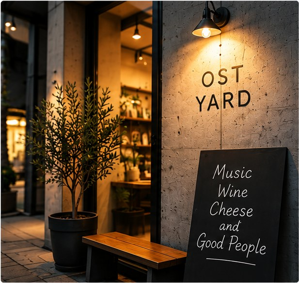
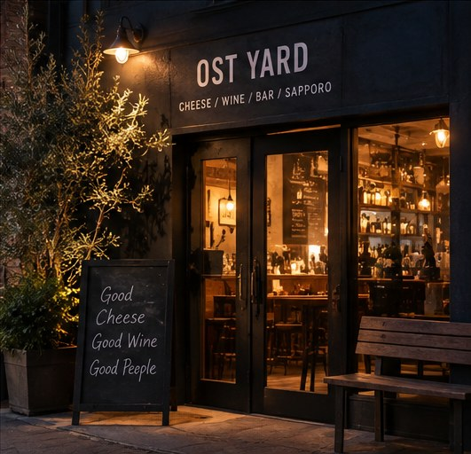

ACCESS
南1条の路地裏、ちょっとだけ寄り道して。
札幌市中央区南1条8丁目界隈。


営業時間
| 営業時間 | 18:00〜24:00（L.O. 23:30） |
|---|---|
| 定休日 | 月曜日 |
よくある質問
駐車場はありますか？
専用駐車場はありません。近くのコインパーキングをご利用ください。
支払い方法は？
現金、クレジットカード、交通系ICがご利用いただけます。
子連れでも大丈夫ですか？
お酒が中心のお店ですが、早い時間であれば大丈夫です。ご予約のときにお知らせください。